Antragsberechtigt
- Unter 250 Mitarbeiter
- Höchstens 50 Mio. € Jahresumsatz
- Sitz oder Niederlassung in Deutschland
- Mindestens ein Jahr am Markt
Unternehmensberatung für Marketing & Digitalisierung
Programm läuft bis 31.12.2026noch 99 Tage
Wir arbeiten mit Ihnen daran, wie Ihr Unternehmen sichtbar wird und über Content, Social Media, Webseite und Anzeigen planbar Anfragen und Umsatz gewinnt. Das bezuschusst der Bund für kleine und mittlere Unternehmen mit bis zu 80 %. Ob Sie in Frage kommen, rechnen Sie hier in zwei Minuten aus.
Sechs Fragen · keine Anmeldung · Ergebnis sofort
50–80 %
Zuschuss, abhängig vom Unternehmenssitz
bis 2.800 €
Zuschuss je Beratung (netto), nach Prüfung durch die Förderstelle
2×
pro Jahr möglich, bis zu 5.600 € Zuschuss im Jahr
Ihr Fördercheck
in zwei Minuten
Frage 4 von 6 · In welcher Branche ist Ihr Unternehmen tätig?
Unternehmen, die mit uns arbeiten
Staatlich gefördert
Unsere Beratung ist über die staatliche Beratungsförderung förderfähig. Sie bezahlen unsere Rechnung zunächst vollständig inklusive Mehrwertsteuer. Nach Abschluss prüft die Förderstelle Bericht und Rechnung und zahlt bei Bewilligung je nach Bundesland 50–80 % der förderfähigen Kosten an Sie aus. Ein Rechtsanspruch auf die Förderung besteht nicht.
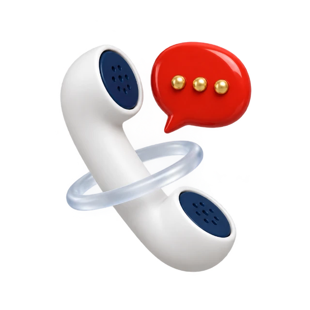
Wir klären gemeinsam, ob Ihr Unternehmen förderfähig ist und welcher Weg für Ihr Bundesland der richtige ist.
Wir bereiten alles vor und begleiten Sie Schritt für Schritt durch den Antrag, ohne Bürokratie-Stress. Erst der Antrag, dann der Angebotsabschluss.
Sie bezahlen die Rechnung vollständig und reichen Bericht und Rechnung ein. Die Förderstelle prüft und zahlt bei Bewilligung 50–80 % der förderfähigen Kosten aus, bis zu 2.800 € je Beratung.
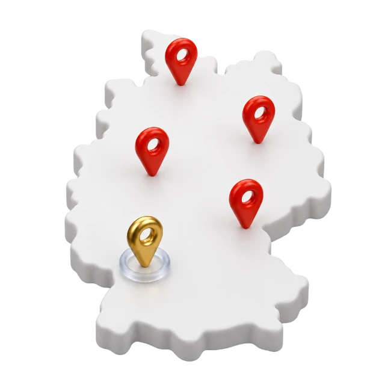
Zuschuss bis zu 2.800 € je Beratung auf die förderfähigen Kosten. Sie gehen in Vorleistung, die Förderstelle zahlt den Zuschuss nach Prüfung des Verwendungsnachweises aus. Über die Bewilligung entscheidet allein die Förderstelle, ein Rechtsanspruch besteht nicht.
Für wen das gilt
Unter 250 Mitarbeiter, höchstens 50 Mio. € Jahresumsatz, mindestens ein Jahr am Markt. Ob Handwerk, Praxis, Handel oder Produktion spielt keine Rolle. Wie hoch der Zuschuss ausfällt, zeigt Ihnen der Fördercheck.
Antragsberechtigt
Sind Sie förderfähig?
Der Fördersatz hängt vom Standort Ihres Unternehmens ab, die Berechtigung von Größe und Branche. Beides prüft der Fördercheck in sechs Fragen und rechnet Ihnen den Zuschuss sofort aus.
Ausgeschlossen
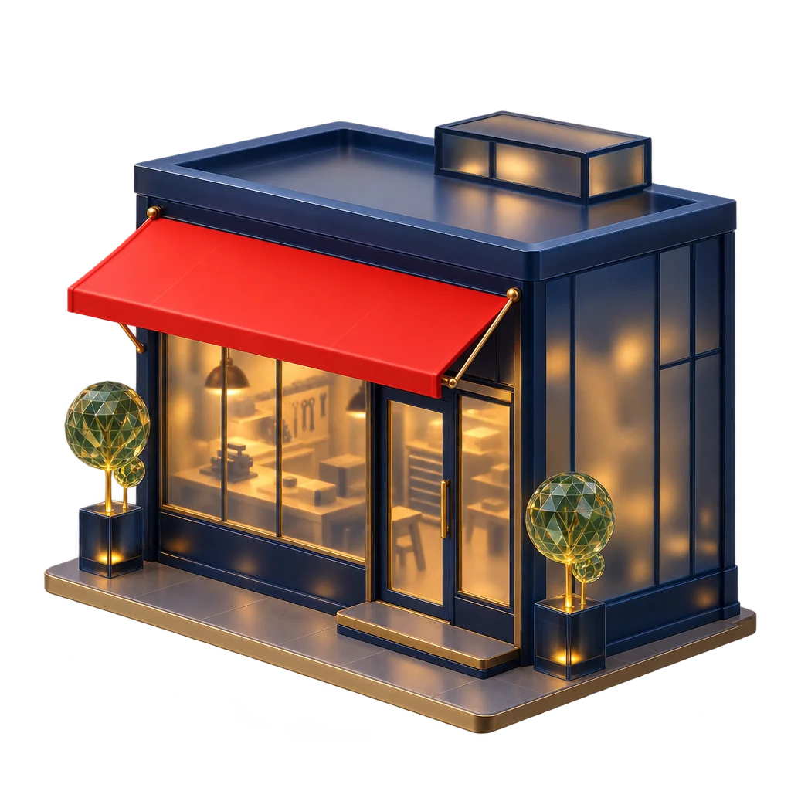
Handwerksbetrieb, Praxis, Laden, Produktion oder Dienstleister: Was zählt, ist der Standort des Unternehmens.
Unter 250 Mitarbeiter und höchstens 50 Mio. € Umsatz. Wer darüber liegt, ist kein KMU und nicht antragsberechtigt.
Worum es bei uns geht
Wir sind Unternehmensberatung für Marketing und Digitalisierung mit Praxiserfahrung aus über 100 Projekten. Wir arbeiten mit Ihnen daran, wie Ihr Unternehmen sichtbar wird und planbar Anfragen gewinnt.
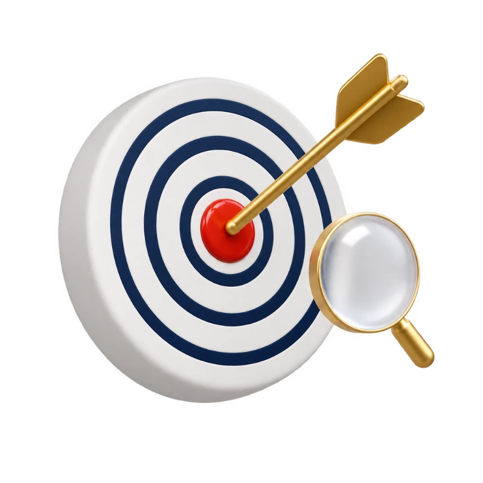
Für wen Sie die erste Wahl sind und wie Sie in Suche, Social Media und KI gefunden werden.
Welche Videos und Beiträge die Fragen Ihrer Kunden beantworten und Vertrauen aufbauen, bevor der erste Kontakt entsteht.
Wie aus Zuschauern und Besuchern Anfragen werden: Landingpages, Formulare, Terminbuchung, Anzeigen.
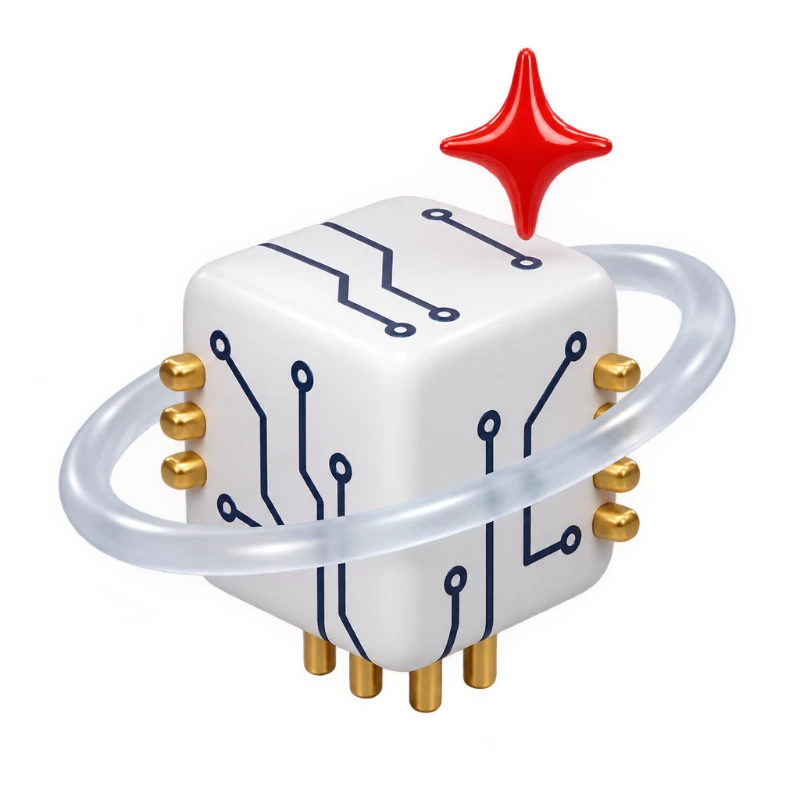
Welche Abläufe sich digital und mit KI vereinfachen lassen, damit Marketing und Vertrieb nebenbei laufen.
Was Kunden mit uns erreicht haben

Handwerk · Barwig Group
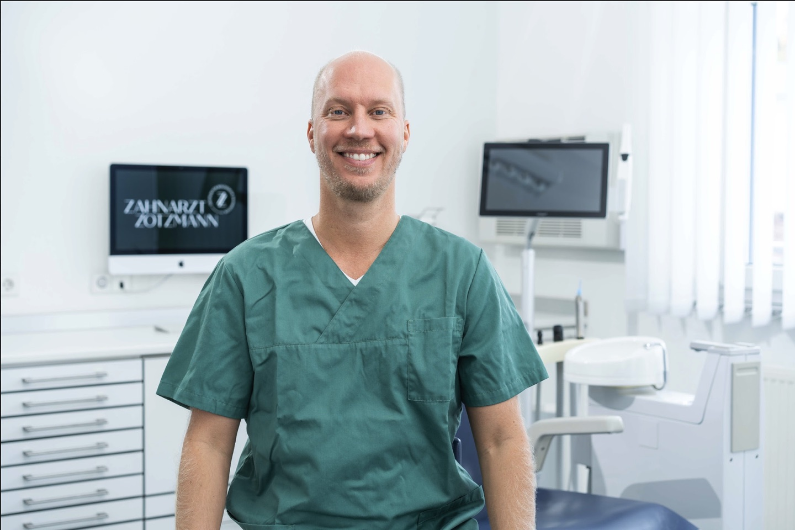
Zahnmedizin · Zotzmann

Integrative Medizin · Börner Lebenswerk
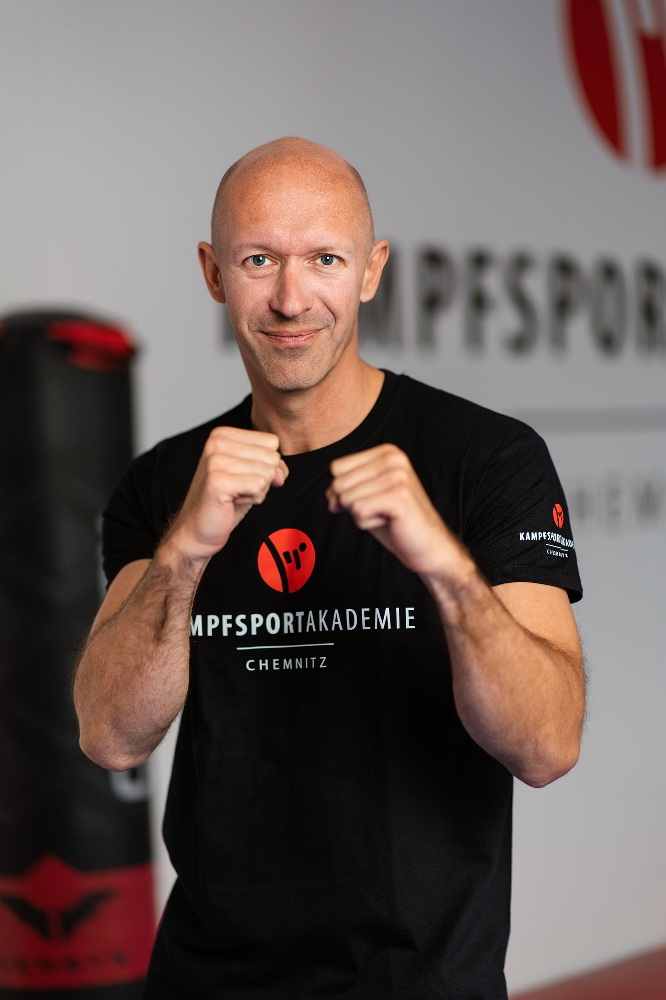
Kampfsport · Sportakademie Chemnitz
Videoproduktion und Anzeigen aus einer Hand: seit Jahren ein konstanter Strom an neuen Mitgliedern für Torsten Fischer.
Beratung mit staatlichem Zuschuss genutzt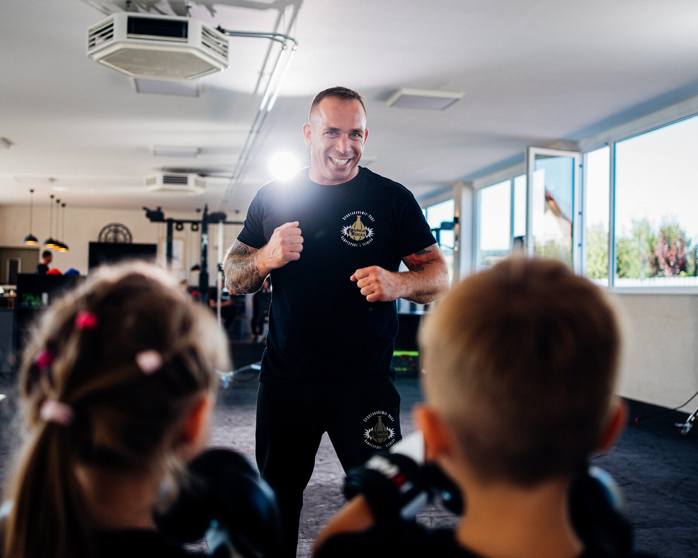
Kampfsport & Fitness · Sportakademie Vogt
Rebranding, Angebot, Webseite, Video und Anzeigen neu aufgebaut. Schon am ersten Tag kamen fünf organische Anfragen.
Beratung mit staatlichem Zuschuss genutzt
Schlafwissenschaft · alesi
Die gemeinsame Strategiearbeit lief über die staatliche Beratungsförderung: Antrag, Bericht und Auszahlung des Zuschusses haben wir begleitet.
Beratung mit staatlichem Zuschuss genutzt100+ Unternehmen vertrauen der Schmidtke GmbH. Ein paar Einblicke:

 Versicherung
Versicherung Medizin
Medizin Immobilien
Immobilien ZahnarztSchlafwissenschaft
ZahnarztSchlafwissenschaftErgebnisse von Unternehmen, die Empfehlungen aus der Zusammenarbeit mit uns umgesetzt haben. Gefördert wird ausschließlich die Beratung, nicht die Umsetzung.
Der Ablauf
Vom Fördercheck bis zum Bericht an die Förderstelle. Die Reihenfolge ist entscheidend: Erst der Antrag, dann der Angebotsabschluss.
Schritt I
Sechs Fragen, dann wissen Sie, ob Ihr Unternehmen in Frage kommt und mit welchem Satz. Danach besprechen wir im Telefontermin, ob der geförderte Weg für Sie sinnvoll ist.
Frage 1 von 6 · Wo hat Ihr Unternehmen seinen Sitz?
Schritt II
Der Antrag wird bei der Förderstelle gestellt, bevor Sie unser Angebot annehmen. Als Beginn gilt bereits der Angebotsabschluss. Diese Reihenfolge ist nicht verhandelbar.
Schritt III
Die Förderstelle prüft den Antrag und schickt ein Informationsschreiben. Erst damit ist klar, dass das Projekt gefördert werden kann. Planen Sie dafür Vorlauf ein.
Schritt IV
Das Angebot wird abgeschlossen, die Zusammenarbeit startet, der Bericht geht an die Förderstelle. Nach Prüfung wird der Zuschuss ausgezahlt.
Die Förderung
Gefördert wird individuelle Unternehmensberatung zu Marketing und Digitalisierung, keine Gruppenveranstaltung und keine Umsetzung. Wir arbeiten mit Ihnen daran, wie Ihr Unternehmen sichtbar wird und planbar Anfragen gewinnt, mit einem Ergebnis, das die Förderstelle als Nachweis akzeptiert.
Vor Ort bei Ihnen oder in unserem Büro in Rottweil. Am Ende liegt eine Handlungsempfehlung auf dem Tisch, die auf Ihren Betrieb zugeschnitten ist und die Sie umsetzen können, mit oder ohne uns.
Wo stehen Sichtbarkeit, Anfragen, Webseite und Prozesse heute, und woran hängt es konkret.
Für wen Sie die erste Wahl sind und mit welcher Botschaft Sie das nach außen zeigen.
Welche Videos und Beiträge auf YouTube, Instagram, LinkedIn oder TikTok Vertrauen aufbauen und Anfragen bringen.
Wie aus Zuschauern und Besuchern Anfragen werden: Landingpages, Formulare, Terminbuchung, Anzeigen.
Welche Abläufe sich digital und mit KI vereinfachen lassen, damit Marketing und Vertrieb nebenbei laufen.
Konkrete nächste Schritte für Ihren Betrieb, schriftlich dokumentiert und als Nachweis für die Förderstelle.
Warum die Schmidtke GmbH
Wir beraten nicht aus der Theorie. Unsere Empfehlungen beruhen auf über 100 Marketingprojekten, in denen wir gesehen haben, welche Kanäle, Webseiten und Kampagnen tatsächlich Anfragen bringen. Genau diese Erfahrung fließt in Ihre Strategie.
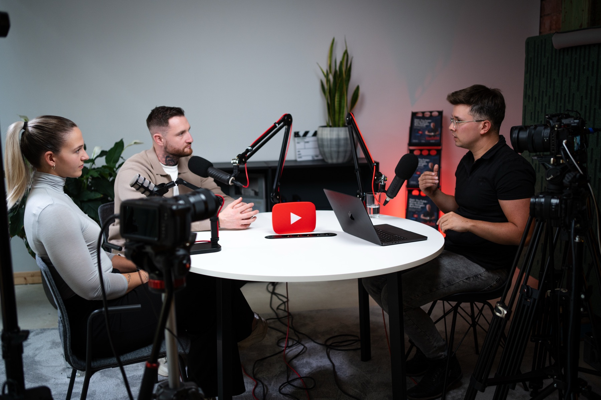
Wir kennen Videoproduktion, Content und Anzeigen aus eigener Erfahrung und wissen, was auf YouTube, Instagram und TikTok wirklich Anfragen bringt.
Kundenkanal letzte 30 Tage · Beispiel
Aufrufe, Anfragen und Anzeigen laufen bei unseren Kunden in einem Bericht zusammen. Diese Zahlen sagen uns, welche Empfehlung sich für Ihren Betrieb lohnt.
Das kennen wir aus der Praxis:
Strategie, Video, Webseite, Anzeigen und KI: Wir kennen jeden Baustein aus der Praxis und sehen schnell, wo bei Ihnen der größte Hebel liegt.
Bei erfolgreichen Unternehmen greifen Videos, Kurzvideos, Webseite und Anzeigen ineinander, und jeder Monat zeigt, welche Inhalte Anfragen bringen. In der Beratung analysieren wir, welche dieser Bausteine für Ihr Unternehmen sinnvoll sind und in welcher Reihenfolge.
Gefördert wird ausschließlich die Beratung. Sie ist unabhängig von einer späteren Umsetzung: Die Empfehlung können Sie selbst oder mit einem Dienstleister Ihrer Wahl umsetzen, eine Verpflichtung gegenüber uns entsteht daraus nicht.
Über uns
Die Schmidtke GmbH ist eine Unternehmensberatung für Marketing und Digitalisierung aus Rottweil im Schwarzwald. Von hier aus beraten wir über 100 Unternehmen in Deutschland, Österreich und der Schweiz: Handwerksbetriebe, Praxen, Sportakademien und Mittelständler.
Für jedes Geschäftsmodell entwickeln wir die passende Strategie: Positionierung, Themen, Kanäle und Vermarktung. Aus über 100 Projekten wissen wir, welche Maßnahmen Anfragen und Umsatz bringen; unsere Kunden haben damit bereits mehrere Millionen Euro Umsatz erzielt. Diese Erfahrung ist die Grundlage jeder Empfehlung.
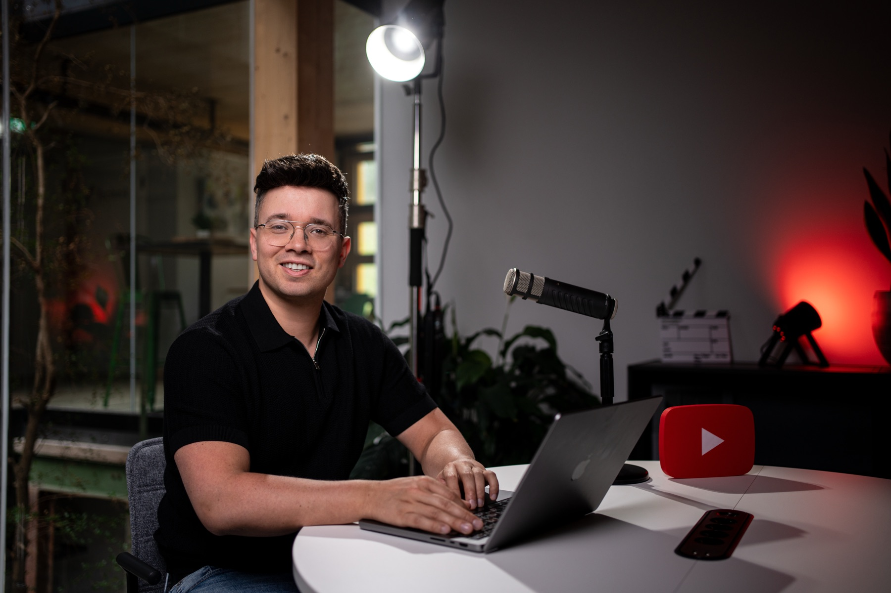
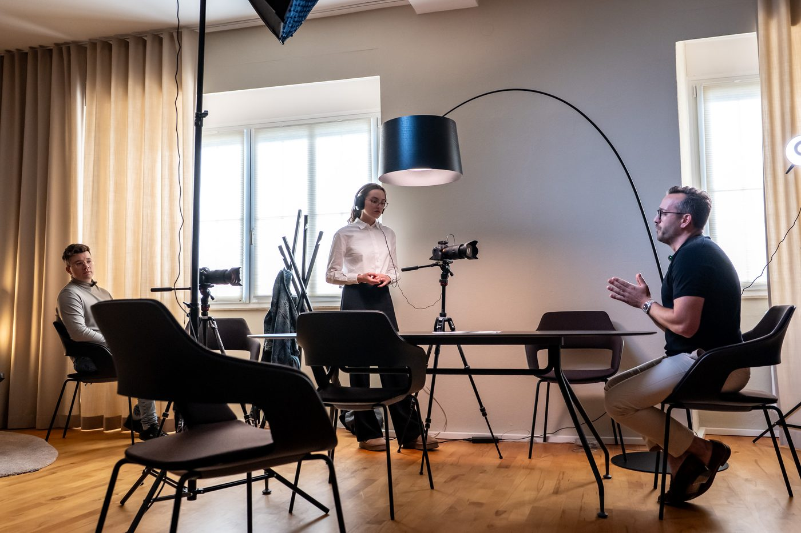
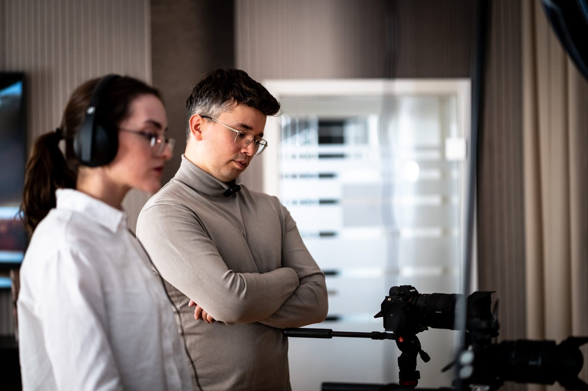
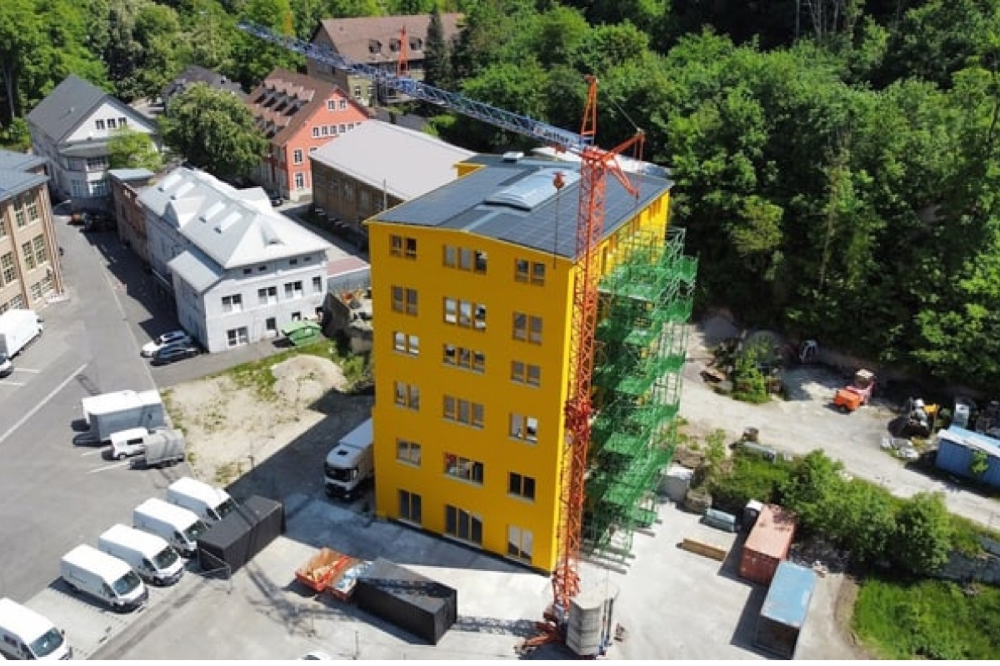


Von Rottweil aus betreuen wir Unternehmen in ganz Deutschland, Österreich und der Schweiz. Digitale Prozesse und persönlicher Kontakt, als säßen wir direkt nebenan. Sie wollen trotzdem vorbeischauen? Gerne, wir freuen uns auf Ihren Besuch.
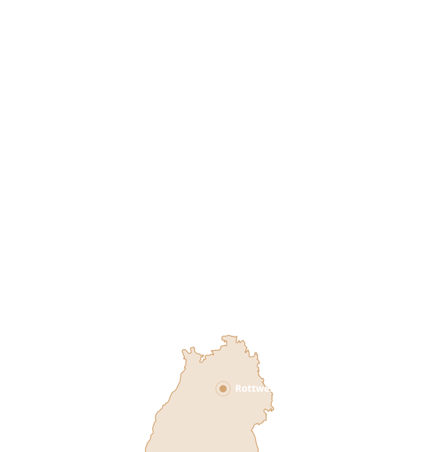
Woher unsere Praxiserfahrung kommt
Wir wissen, wie Videoproduktion neben dem Tagesgeschäft funktioniert: Setup, Skripte und Drehtage so, dass der Betrieb weiterläuft.
Themen, Titel und Skripte, die genau die Fragen beantworten, die Kunden vor der Beauftragung stellen. So wird ein Handwerksbetrieb zur bekanntesten Stimme seiner Region.
Wir haben in vielen Projekten gesehen, welche Seiten Zuschauer zu Anfragen machen und welche Kampagnen mit Google und Meta messbar Ergebnisse bringen.
Videos, die einmal gedreht wurden, bringen bis heute laufend Anfragen: 500+ Patientenanfragen für eine Zahnarztpraxis, über 1 Mio. € Umsatz über YouTube für eine Praxis für integrative Medizin, planbare Anfragen für einen Handwerksbetrieb.
Das Programm läuft bis 31.12.2026, und der Antrag braucht Vorlauf. Zwei Minuten reichen, um zu wissen, ob Ihr Unternehmen in Frage kommt.
Jetzt Förderfähigkeit prüfenUnsere Kunden
Vom Handwerksbetrieb über Praxen und Sportakademien bis zum Mittelstand: Wir arbeiten mit Unternehmen, die über Video, Content und Webseite planbar Kunden gewinnen wollen.


Ihr Berater
Fabian Schmidtke lädt 2007 seine ersten YouTube-Videos hoch und erreicht noch als Teenager die ersten Millionen Aufrufe. Ab 2014 arbeitet er mit Fitness-YouTubern und verbindet Videoproduktion mit Online-Marketing. Seit 2020 setzt er dieses Wissen mit dem Team der Schmidtke GmbH für Unternehmen ein.
Für jedes Kundenmodell entwickelt er die passende Strategie, Themen und Vermarktung. Sie bekommen genau diese Erfahrung: eine ehrliche Analyse Ihrer Ausgangslage und eine Empfehlung, die auf Ihren Betrieb zugeschnitten ist. Die Zusammenarbeit führt er selbst, kein Subunternehmer, kein Standardprogramm.
Bewertungen
Keine Versprechen, sondern Stimmen von Unternehmen, die mit uns an Marketing, Video und Webseite gearbeitet haben.
Ein Partner, der Marketing versteht
„Ich hatte in den letzten 3 Jahren schon vieles ausprobiert. Viele Agenturen scheitern, weil sie Marketing nicht verstehen. Bei Schmidtke GmbH habe ich einen sehr guten Partner gefunden, der versteht, was Kunden wollen, und dich da abholt, wo du stehst.“
Klare, verständliche Beratung
„Man merkt sofort, dass hier echte Expertise vorhanden ist und nicht einfach nur ‚verkauft‘ wird mit Marketing-Blabla, sondern dass sich hier wirklich Zeit genommen wird, um auf die individuelle Situation einzugehen.“
Schnell gezielte Patientenanfragen
„Dank der Zusammenarbeit erhielten wir schnell gezielte Patientenanfragen und steigerten unsere Bekanntheit und Reichweite. Die Beratung war herausragend, und wir fühlten uns von Anfang an in besten Händen.“
Top-Adresse für Social Media, YouTube und Webseite
„Top Adresse in Sachen Social Media, YouTube-Werbung und Website-Erstellung. Sehr professionelle und ergebnisorientierte Arbeit. Ich kann nur Positives berichten, jederzeit gerne wieder.“
Stimmen aus den Fallstudien
„Unsere YouTube-Videos kommen richtig gut an und wir bekommen dadurch auch Anfragen im Bereich Heizung, Sanitär & Photovoltaik.“
„Wir gewinnen Patienten-Anfragen und Vertrauen über unseren YouTube-Kanal, ohne selber viel Zeit dafür einzusetzen.“
„Die Patienten, die über die Videos kommen, sind anders: informiert, motiviert und genau die, für die unser Angebot gemacht ist.“
Häufige Fragen
Kleine und mittlere Unternehmen mit Sitz in Deutschland: unter 250 Mitarbeiter und höchstens 50 Mio. € Jahresumsatz. Ausgenommen sind unter anderem Coaches, Trainer, Unternehmensberater und Consultants, Steuerberater, Wirtschaftsprüfer und Rechtsanwälte sowie Unternehmen in Schwierigkeiten.
Die Förderstelle übernimmt nach Prüfung 50 bis 80 % der Beratungskosten, bis zu 2.800 € je Beratung (netto). Der genaue Fördersatz hängt vom Standort Ihres Unternehmens ab, der Fördercheck rechnet ihn für Sie aus. Bis zu zwei Beratungen pro Jahr sind möglich.
Gefördert wird individuelle Beratung für Ihr Unternehmen mit schriftlichem Bericht. Nicht gefördert werden Gruppenveranstaltungen jeder Art, die reine Umsetzung von Dienstleistungen, Beratungen, die sich hauptsächlich mit Fördermitteln beschäftigen, und Beratungen, die auf den Kauf von Leistungen des Beraters gerichtet sind. Unsere Beratung ist deshalb unabhängig von einer späteren Umsetzung.
Vor dem Angebotsabschluss. Als Beginn gilt bereits die Annahme unseres Angebots. Wer erst abschließt und dann beantragt, bekommt dafür keine Förderung mehr.
Die Förderstelle prüft den Antrag und schickt ein Informationsschreiben. Erst danach wird das Angebot abgeschlossen und die Zusammenarbeit startet. Planen Sie dafür Vorlauf ein, das Programm läuft bis 31.12.2026.
Ja. Sie bezahlen unsere Rechnung vollständig inklusive Mehrwertsteuer. Nach Abschluss reichen Sie Bericht und Rechnung bei der Förderstelle ein, die den Zuschuss nach Prüfung auszahlt. Ein Rechtsanspruch auf die Förderung besteht nicht, die Förderstelle kann einen Antrag auch ablehnen. Deshalb klären wir vorab so genau wie möglich, ob Ihr Unternehmen die Voraussetzungen erfüllt.
Höchstens fünf Beratungen bis zum 31.12.2026 und höchstens zwei pro Jahr. Frühere Beratungsförderungen aus dem Programm zählen mit.
Wir analysieren Ihre Situation und erarbeiten eine betriebsindividuelle Handlungsempfehlung, wie Ihr Unternehmen sichtbar wird und planbar Anfragen gewinnt: Positionierung, Content, Social Media, Webseite, Anzeigen und Prozesse. Das Ergebnis wird als schriftlicher Bericht festgehalten, den die Förderstelle als Nachweis verlangt.
Jetzt starten
Keine Anmeldung, keine Unterlagen. Der Fördercheck prüft Standort, Größe und Branche und rechnet Ihren Zuschuss direkt hier aus.
Jetzt Förderfähigkeit prüfenUnverbindliche Orientierung. Über die Bewilligung entscheidet die Förderstelle.